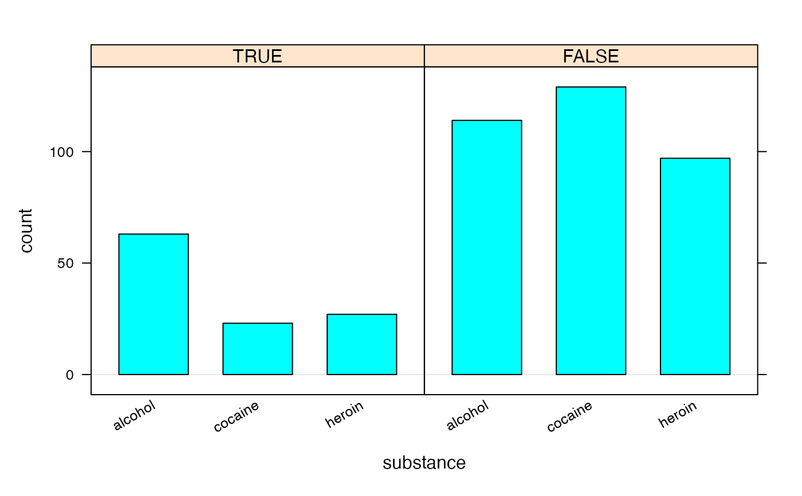

lattice::barchart() from the lattice package makes bar graphs from
pre-tabulated data. Raw data can be tabulated using xtabs(), but the syntax
is unusual compared to the other lattice plotting functions. bargraph provides
an interface that is consistent with the other lattice functions.
bargraph(x, data = parent.frame(), groups = NULL, horizontal = FALSE, origin = 0, ylab = ifelse(horizontal, "", type), xlab = ifelse(horizontal, type, ""), type = c("count", "frequency", "proportion", "percent"), auto.key = TRUE, scales = list(), ...)
| x | a formula describing the plot |
|---|---|
| data | a data frame in which the formula |
| groups | a variable or expression used for grouping. See |
| horizontal | a logical indicating whether bars should be horizontal |
| origin | beginning point for bars. For the default behavior used by
|
| ylab | a character vector of length one used for the y-axis label |
| xlab | a character vector of length one used for the x-axis label |
| type | one of |
| auto.key | a logical expression indicating whether a legend should be automatically produced |
| scales | is a list determining how the x- and y-axes are drawn |
| … | additional arguments passed to |
a trellis object describing the plot
bargraph(formula, data=data, ...) works by creating a new data frame from xtabs(formula, data=data)
and then calling lattice::barchart() using modified version of the formula and this
new data frame as inputs. This has implications on, for example, conditional plots where
one desires to condition on some expression that will be evaluated in data. This typically
does not work because the required variables do not exist in the output of xtabs. One solution
is to first add a new variable to data first and then to condition using this new variable.
See the examples.
if (require(mosaicData)) { data(HELPrct) bargraph( ~ substance, data = HELPrct) bargraph( ~ substance, data = HELPrct, horizontal = TRUE) bargraph( ~ substance | sex, groups = homeless, auto.key = TRUE, data = HELPrct) bargraph( ~ substance, groups = homeless, auto.key=TRUE, data = HELPrct %>% filter(sex == "male")) HELPrct2 <- mutate(HELPrct, older = age > 40) bargraph( ~ substance | older, data = HELPrct2) }